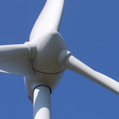
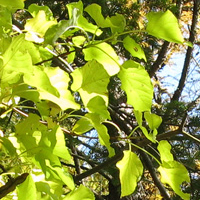

Comfort, Delightful, Refreshing Time Produce
 風車は風を受けて回転します。このとき、効率よく風を受けるためには、風上に向かって真正面をむかなければなりません。そのため、風車は首が回るようになっており、常に真正面から風を受けることができるようになっています。この…
READ MORE
海岸には砂や貝殻しかないように思ってしまいますが、よく見ると草花も生えていることがわかります。ただし、海水や潮風、強い日差しなどの影響で、大きく育つものは見当たりません。その多くは小さく、地を這って伸びています。…
 ツル植物は太い木の幹に巻きつき、どんどんとツルを伸ばしていきます。太陽の当たる方向に葉をつけ、枝を伸ばしていくたくましさは見習いたいものです。遠くから見ると細く見えるツルも、近くで見ると意外と太く、簡単に切ることは…
原生花園では今年も色とりどりの花が咲いています。特に今年は原色の色鮮やかな花がたくさん咲いていますので、週末には多くの人が訪れ、花を楽しんでいます。花の見ごろは来週半ばごろまで続くそうですので、時間を作って行ってみ…